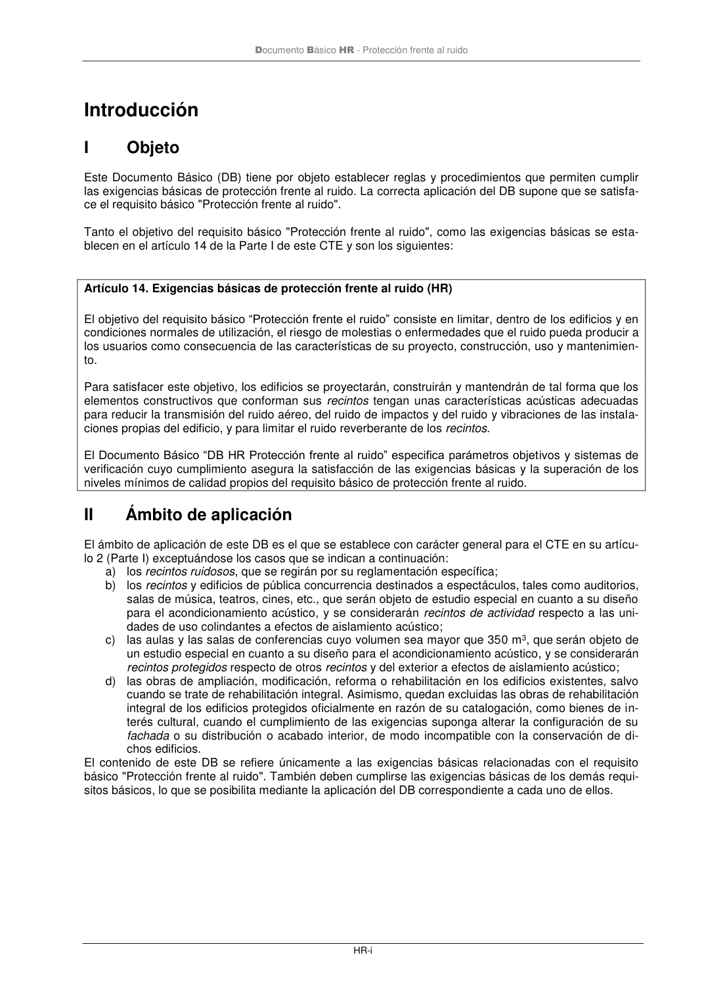

DB-HR Protección frente al ruido · edición 2019-12-20 · capa oficial
Documento DB-HR-oficial · SHA-256 del PDF a67baeca5138bb1f121f797d23a79a4557bd9ac4abacd954024893e05411eeab
Página física 3 de 80.
Copia fiel del PDF fuente · Fuente oficial
Ficha de la disposición en la fuente oficial
Formato: Texto de la página (Markdown)
Documento Básico HR - Protección frente al ruido HR-i Introducción I Objeto Este Documento Básico (DB) tiene por objeto establecer reglas y procedimientos que permiten cumplir las exigencias básicas de protección frente al ruido. La correcta aplicación del DB supone que se satisfa- ce el requisito básico "Protección frente al ruido". Tanto el objetivo del requisito básico "Protección frente al ruido", como las exigencias básicas se esta- blecen en el artículo 14 de la Parte I de este CTE y son los siguientes: Artículo 14. Exigencias básicas de protección frente al ruido (HR) El objetivo del requisito básico “Protección frente el ruido” consiste en limitar, dentro de los edificios y en condiciones normales de utilización, el riesgo de molestias o enfermedades que el ruido pueda producir a los usuarios como consecuencia de las características de su proyecto, construcción, uso y mantenimien- to. Para satisfacer este objetivo, los edificios se proyectarán, construirán y mantendrán de tal forma que los elementos constructivos que conforman sus recintos tengan unas características acústicas adecuadas para reducir la transmisión del ruido aéreo, del ruido de impactos y del ruido y vibraciones de las instala- ciones propias del edificio, y para limitar el ruido reverberante de los recintos. El Documento Básico “DB HR Protección frente al ruido” especifica parámetros objetivos y sistemas de verificación cuyo cumplimiento asegura la satisfacción de las exigencias básicas y la superación de los niveles mínimos de calidad propios del requisito básico de protección frente al ruido. II Ámbito de aplicación El ámbito de aplicación de este DB es el que se establece con carácter general para el CTE en su artícu- lo 2 (Parte I) exceptuándose los casos que se indican a continuación: a) los recintos ruidosos, que se regirán por su reglamentación específica; b) los recintos y edificios de pública concurrencia destinados a espectáculos, tales como auditorios, salas de música, teatros, cines, etc., que serán objeto de estudio especial en cuanto a su diseño para el acondicionamiento acústico, y se considerarán recintos de actividad respecto a las uni- dades de uso colindantes a efectos de aislamiento acústico; c) las aulas y las salas de conferencias cuyo volumen sea mayor que 350 m3, que serán objeto de un estudio especial en cuanto a su diseño para el acondicionamiento acústico, y se considerarán recintos protegidos respecto de otros recintos y del exterior a efectos de aislamiento acústico; d) las obras de ampliación, modificación, reforma o rehabilitación en los edificios existentes, salvo cuando se trate de rehabilitación integral. Asimismo, quedan excluidas las obras de rehabilitación integral de los edificios protegidos oficialmente en razón de su catalogación, como bienes de in- terés cultural, cuando el cumplimiento de las exigencias suponga alterar la configuración de su fachada o su distribución o acabado interior, de modo incompatible con la conservación de di- chos edificios. El contenido de este DB se refiere únicamente a las exigencias básicas relacionadas con el requisito básico "Protección frente al ruido". También deben cumplirse las exigencias básicas de los demás requi- sitos básicos, lo que se posibilita mediante la aplicación del DB correspondiente a cada uno de ellos.
